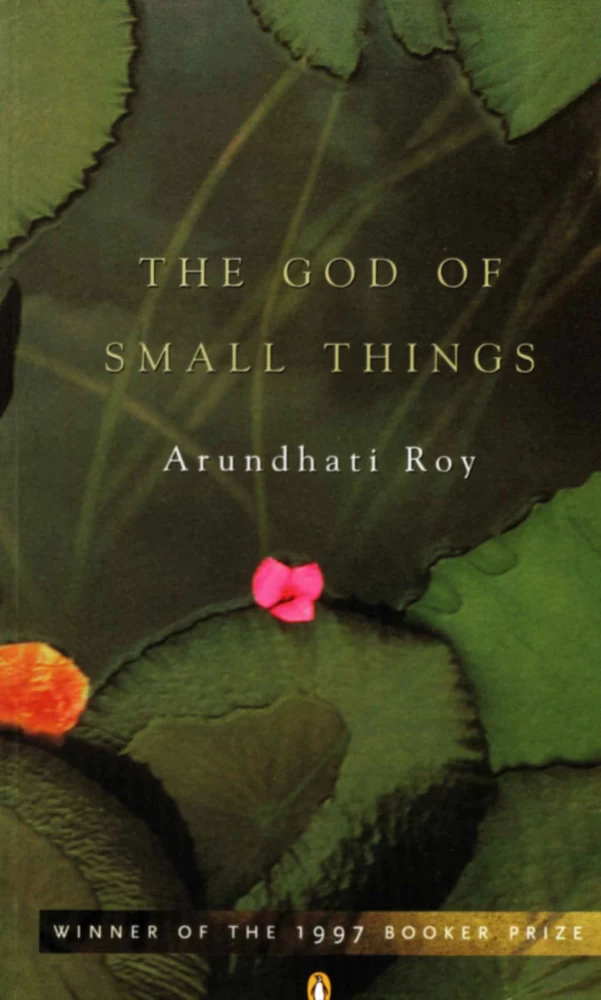

MyBooks
BOOKS I HAVE READ IN 2023.... SO HERE IS THE LIST
1. Crime And Punishment - Fyodor Dostovesky

Crime and Punishment follows the mental anguish and moral dilemmas of Rodion Raskolnikov, an impoverished ex-student in Saint Petersburg who plans to kill an unscrupulous pawnbroker, an old woman who stores money and valuable objects in her flat. He theorises that with the money he could liberate himself from poverty and go on to perform great deeds, and seeks to convince himself that certain crimes are justifiable if they are committed in order to remove obstacles to the higher goals of 'extraordinary' men. Once the deed is done, however, he finds himself racked with confusion, paranoia, and disgust. His theoretical justifications lose all their power as he struggles with guilt and horror and is confronted with both internal and external consequences of his deed.
2. God Of Small Things - Arundhati Roy
The God of Small Things is a family drama novel written by Indian writer Arundhati Roy. Roy's debut novel, is a story about the childhood experiences of fraternal twins whose lives are destroyed by the "Love Laws" prevalent in 1960s Kerala, India. The novel explores how small, seemingly insignificant occurrences, decisions and experiences shape people's behavior in deeply significant ways. The novel also explores the lingering effects of casteism in India, lending a culturally-specific critique of British colonialism in India. It won the Booker Prize in 1997. The God of Small Things was Roy's first book, published in 1997. It was followed by the 2017 publication, The Ministry of Utmost Happiness twenty years later. Roy began writing the manuscript for The God of Small Things in 1992 and finished four years later, in 1996, leading to its publication the following year. The potential of the story was first recognized by HarperCollins editor, Pankaj Mishra, who sent it to three British publishers. Roy received a £500,000 advance, and rights to the book were sold in 21 countries.
3. The Great Gatsby - F. Scott Fitzgerald

The Great Gatsby is a 1925 novel by American writer F. Scott Fitzgerald. Set in the Jazz Age on Long Island, near New York City, the novel depicts first-person narrator Nick Carraway's interactions with mysterious millionaire Jay Gatsby and Gatsby's obsession to reunite with his former lover, Daisy Buchanan. The novel was inspired by a youthful romance Fitzgerald had with socialite Ginevra King, and the riotous parties he attended on Long Island's North Shore in 1922. Following a move to the French Riviera, Fitzgerald completed a rough draft of the novel in 1924. He submitted it to editor Maxwell Perkins, who persuaded Fitzgerald to revise the work over the following winter. After making revisions, Fitzgerald was satisfied with the text, but remained ambivalent about the book's title and considered several alternatives. Painter Francis Cugat's dust jacket art greatly impressed Fitzgerald, and he incorporated its imagery into the novel.